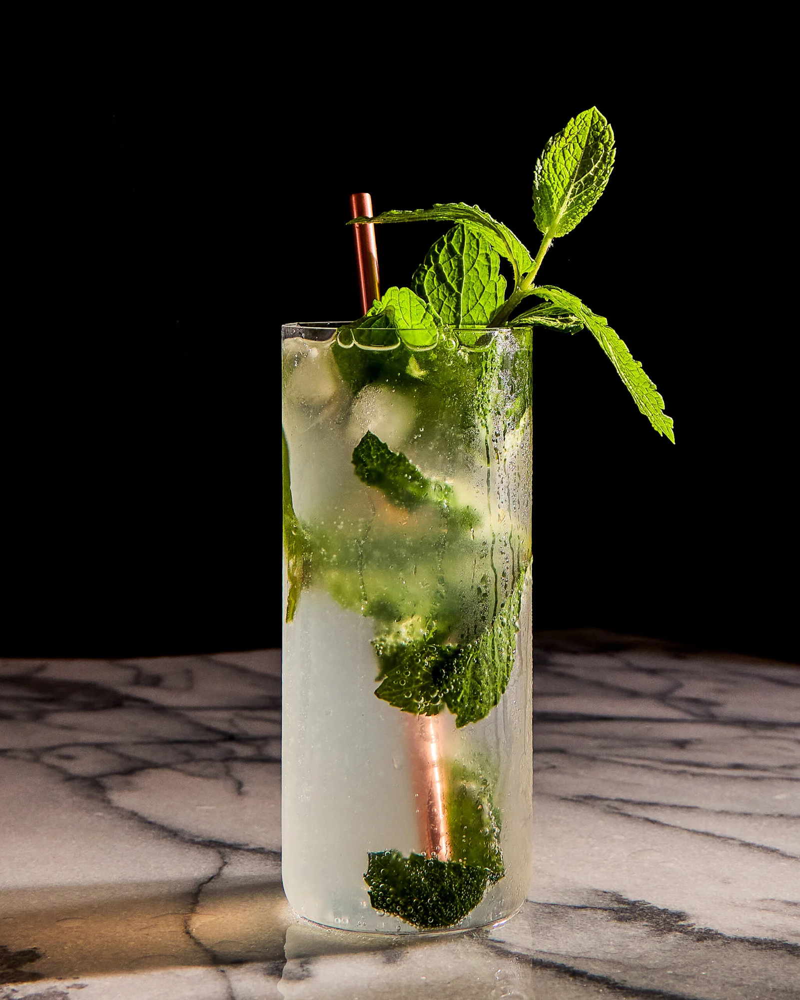

Mojito
Le Mojito est un cocktail cubain classique, connu pour sa combinaison rafraîchissante de menthe, de citron vert et de rhum. Il est parfait pour les chaudes journées d'été et est apprécié dans le monde entier pour son goût unique et sa présentation élégante.
Recette complète
Ingrédients
- 5 cl de rhum blanc
- 1/2 citron vert (coupé en morceaux ou quartiers)
- 8 à 10 feuilles de menthe fraîche (de préférence de la menthe verte ou marocaine)
- 2 cuillères à café de sucre roux (cassonade) ou 2 cl de sirop de sucre de canne
- Eau gazeuse (type Perrier ou eau pétillante neutre) pour allonger le verre
- Glace pilée (ou glaçons)
Matériel
- Un grand verre (type highball ou tumbler large)
- Un pilon de bar
- Une cuillère à mélange (cuillère à long manche)
- Un doseur (jigger)
Préparation
- Placez les morceaux de citron vert et le sucre dans le verre, puis pilez pour extraire le jus.
- Ajoutez les feuilles de menthe et pressez-les légèrement avec le pilon, sans les déchiqueter.
- Remplissez le verre de glace pilée et versez le rhum blanc.
- Complétez avec l'eau gazeuse et remuez doucement avec la cuillère à mélange.
- Décorez avec une branche de menthe.
